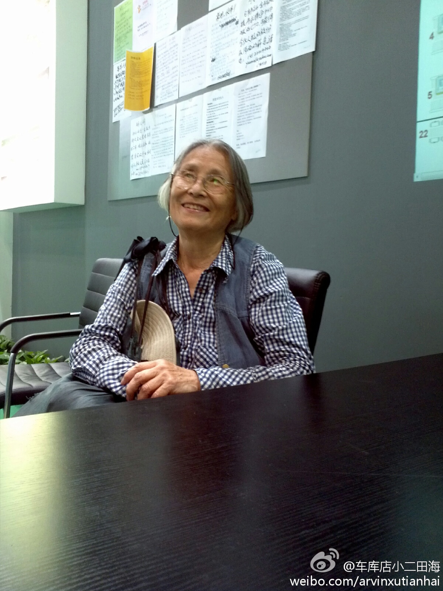

佩服。可是如果这位老人去参加某些公司举办的活动，很可能被当成“会虫”的。//@网路冷眼:真的诠释了活到老，学到老的精神 //@ruilog://@车库咖啡: 昨天在座的科技部官员都为之汗颜，尊敬这位老人。@田海姓徐:昨天有位八十二岁高龄的老奶奶来到车库的展位，还以为她是想找个座位休息，后来才知道是奔着车库来的，原来是她孙女现在在美国创业，她想过来了解一下@车库咖啡 。经常单车出行，喜欢参加新技术类展览，五十多岁的时候拿到某著名高校的硕士学位，会讲六种语言……最近在研究魔方，一种非常强的学习精神 